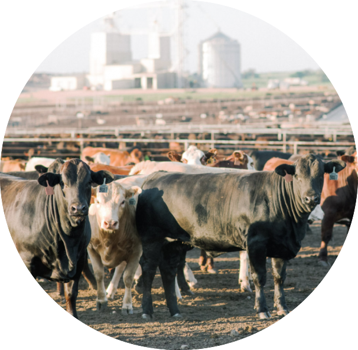

CAFOs and Environmental Justice
What are CAFOs?
The U.S. Environmental Protection Agency (EPA) defines Animal Feeding Operations (AFOs) as agricultural operations where animals are kept and raised in confined situations and fed or maintained for 45 or more days per year, and crops, vegetation, or forage growth are not sustained over a normal growing period.1 A concentrated animal feeding operation (CAFO) is an AFO that raises animals at high-density, for the consumption of meat, eggs, or milk.2

Why should you be concerned about CAFOs?
“Where data were available [regarding CAFOs], both the quantity and nature of the data were highly variable from state to state. States are responsible for collecting information and reporting it to the EPA, but there is no standardized collection or reporting requirement. […] Regulators and the public need this information to protect communities from CAFO pollution and hold the agriculture industry accountable for its impacts under the law.” - Natural Resources Defense Council
Environmental Impact and Inadequate Regulations
Water
Under the Clean Water Act (Act), CAFOs are defined as point source dischargers. CAFOs are regulated under the National Pollutant Discharge Elimination System (NPDES) permitting program, which prohibits discharges from a CAFO to waters of the U.S. without an NPDES permit. However, more than 20,000 CAFOs across the U.S. are unregulated under the Act, resulting in poor regulatory oversight regarding pollution discharge.3
The EPA’s 2000 National Water Quality Inventory found that 29 states identified AFOs as contributing to water quality impairment. The agriculture sector, is the leading contributor of pollutants to lakes, rivers, and reservoirs. The EPA has found that states with high concentrations of CAFOs experience on average 20 to 30 serious water quality problems per year.4
Air
The Comprehensive Environmental Response, Compensation, and Liability Act (CERCLA) and the Emergency Planning and Community Right-to-Know Act (EPCRA), require reporting of releases of hazardous substances. The purpose of these reports is for officials to evaluate the need for an emergency response to mitigate the effects of a release to a community. However, the EPA exempts the reporting of air emissions from animal waste at farms.5
According to the CDC, CAFOs contribute to over 7% of Greenhouse gas emissions in the U.S. Manure from CAFOs emit methane and nitrous oxide which are 23 and 300 times more potent that carbon dioxide. However, a lack of air emission data makes it difficult to accurately quantify the exact air quality impacts and greenhouse gas emissions associated with CAFOs.
Water and air quality are just two of the myriad of environmental health effects caused by CAFOs, others include: odor, insect vectors, pathogens, and antibiotics.
Who is being affected by CAFOs?
“CAFOs threaten our rural economies, public health, and environmental quality. These negative impacts disproportionately affect low-income communities and communities of color because of where CAFOs operate and who they employ.”6
Environmental Injustice and Missing Data
Several studies indicate that CAFOs are located disproportionately in communities with higher percentage of minorities and in low-income communities.7,8,9 These are areas with other social vulnerabilities, including areas with more residents with disabilities, older residents, and lower socioeconomic status.
CAFOs pollute the air, water, and soil, harming the quality of life of nearby residents and producing inequitable health effects.10 There are reports of workers and communities surrounding CAFOs with increased health concerns such as asthma, bronchitis, burning eyes, nausea, skin disorders, pain in the throat, and coughing. These symptoms are associated with exposure to chemicals like ammonia, hydrogen sulfide and particulate matter, which are found in high concentrations at CAFOs.11
In addition, the construction of a CAFO lowers the home and land values surrounding it. A 2015 publication found that properties located within three miles of a CAFO lose up to 26% of their value and neighborhoods within a quarter mile, lose up to 88%.12 Thus, making it more difficult for individuals to sell their property and escape unhealthy living conditions.
As discussed, there are numerous studies that associate health effects caused by CAFOs and the proximity to communities of color and high poverty rates. Yet, there is a lack of data to accurately assess these issues due to inadequate and unjust regulations.
How can you help?
Raise a stink!
Educate yourself and others
Understand the regulatory requirements for CAFOs.
Research your area to determine if CAFOs are nearby and could be causing environmental health problems for you and your community.
Purchase and consume responsibly
Be intentional with your choises, as they indirectly affect others well-being.
Support small-scale farmers and local producers instead of large-scale harmful corporate food systems.
Participate in community policy development.
Vote for officials who support sustainable food systems.
Contact officials expressing policy recommendations.
Demand policy for stricter CAFO regulations and protections for vulnerable communities.

Footnotes
https://www.epa.gov/npdes/animal-feeding-operations-afos↩︎
https://www.cdc.gov/nceh/ehs/docs/understanding_cafos_nalboh.pdf↩︎
https://civileats.com/2022/10/26/can-a-court-compel-the-epa-to-protect-communities-of-color-from-cafo-pollution/↩︎
https://www.cdc.gov/nceh/ehs/docs/understanding_cafos_nalboh.pdf↩︎
https://www.epa.gov/epcra/cercla-and-epcra-reporting-requirements-air-releases-hazardous-substances-animal-waste-farms↩︎
https://moenvironment.org/blog/injusticecafos/#:~:text=The%20Environmental%20Injustice%20of%20CAFOs,operate%20and%20who%20they%20employ.↩︎
https://www.sciencedirect.com/science/article/abs/pii/S0013935121001560↩︎
https://iopscience.iop.org/article/10.1088/2752-5309/ac9329↩︎
Alex Reed. 2022. “Predicting Concentrated Animal Feeding Operation (CAFO) Presence in California Based on Poverty Rate.” December 3, 2022. https://reedalexandria.github.io/2022-12-03-cafo-presence.↩︎
https://earthjustice.org/sites/default/files/files/quistreport_cafopetition_oct2022.pdf↩︎
https://cfpub.epa.gov/ncer_abstracts/index.cfm/fuseaction/display.abstractDetail/abstract_id/10839/report/F↩︎
“The Appraisal Journal”. (2015),by the Appraisal Institute, Chicago Illinois, by John A Kilpatrick↩︎
Citation
@online{reed2022,
author = {Alex Reed},
title = {CAFOs and {Environmental} {Justice}},
date = {2022-12-07},
url = {https://reedalexandria.github.io/2022-12-07-environmental-injustice-cafos},
langid = {en}
}